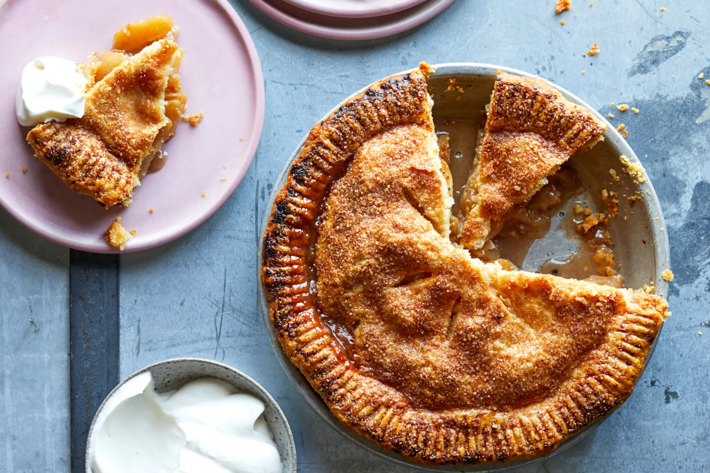

Back to Home
Apple Pie

A delicious and classic apple pie recipe.
Description
This classic apple pie features a buttery, flaky crust filled with tender apple slices coated in a sweet blend of cinnamon, sugar, and warm spices. As it bakes, the filling becomes soft and flavorful, creating a comforting dessert with every bite.
Perfect for family gatherings, holidays, or a cozy evening treat, apple pie is best served warm on its own or with a scoop of vanilla ice cream. Its rich aroma, crisp golden crust, and delicious filling make it a timeless favorite that everyone will enjoy.
Ingredients
- 2 1/2 cups all-purpose flour
- 1 cup unsalted butter, cold and cubed
- 1/4 cup granulated sugar
- 1/4 teaspoon salt
- 6-8 tablespoons ice water
- 6 cups thinly sliced apples (Granny Smith or Honeycrisp)
- 3/4 cup granulated sugar
- 2 tablespoons all-purpose flour
- 1 teaspoon ground cinnamon
- 1/4 teaspoon ground nutmeg
- 1 tablespoon lemon juice
- 1 tablespoon unsalted butter, cut into small pieces
Steps
- Preheat your oven to 425°F (220°C).
- In a large bowl, combine the flour, sugar, and salt. Cut in the cold butter until the mixture resembles coarse crumbs. Gradually add ice water, one tablespoon at a time, until the dough comes together.
- Divide the dough in half, shape into discs, wrap in plastic wrap, and refrigerate for at least 1 hour.
- In another bowl, combine the sliced apples, sugar, flour, cinnamon, nutmeg, and lemon juice. Toss to coat the apples evenly.
- Roll out one disc of dough on a floured surface to fit a 9-inch pie pan. Transfer the dough to the pie pan and trim any excess.
- Pour the apple filling into the crust and dot with small pieces of butter.
- Roll out the second disc of dough and place it over the filling. Trim and crimp the edges to seal. Cut a few slits in the top crust to allow steam to escape.
- Bake for 45-50 minutes or until the crust is golden brown and the filling is bubbly. If the edges brown too quickly, cover them with foil.
- Allow the pie to cool before serving. Enjoy!